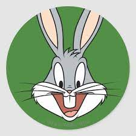

BUGS BUNNY

- Sobre mi:
Soy un conejo o liebre antropomórfico de color gris y blanco, reconocido por su impertinente y despreocupada personalidad, además de sus dotes de embaucador y su frase "¿Que hay de nuevo... viejo?"
- Contacto :
- Formación:
- Experiencia:
Columna Derecha

Senserit mediocrem vis ex, et dicunt deleniti gubergren mei. Mel id clita mollis repudiare. Sed ad nostro delicatissimi, postea pertinax est an. Adhuc sensibus percipitur sed te, eirmod tritani debitis nec ea. Cu vis quis gubergren.